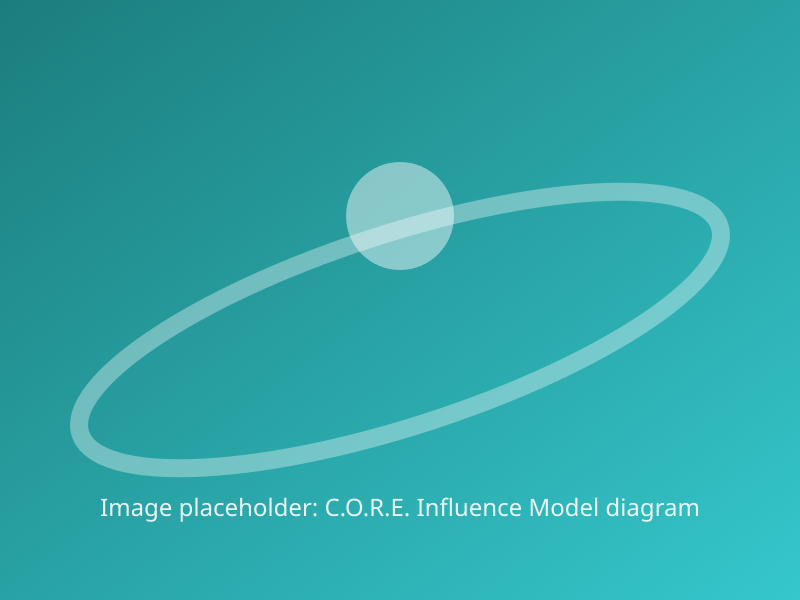

For organizations
Leadership, team and culture programs built around your business goals.
Explore corporate solutionsInnerello Consulting & Learning works with organizations and institutions across India to build leadership, improve how teams work together, and prepare people for what the workplace demands.


Whether you lead a company, run a college or want to build your own career, there is a program designed around where you start.
Leadership, team and culture programs built around your business goals.
Explore corporate solutionsFaculty development and employability programs that produce job-ready graduates.
Explore institute solutionsInnerello is a consulting, leadership development, and learning partner helping organizations and educational institutions build capability, strengthen performance, and create lasting growth. Every solution is designed around your goals, not a standard training catalogue.
Closing the gap between what people learn and what work demands.
Building capable leaders, high-performing teams and growth-oriented organizations.

Executive presence, strategic thinking, stakeholder management and high-performance leadership.
Enquire on WhatsApp
Customized training in communication, emotional intelligence and managerial capability.
Enquire on WhatsAppBetter collaboration, engagement, accountability and workplace culture.
Enquire on WhatsAppChange management, culture transformation and organization-wide capability building.
Enquire on WhatsAppExperienced coaches and consultants to navigate change and build long-term capability.
Enquire on WhatsAppKeynotes, talks and panels that inspire action around leadership, learning and workplace excellence.
Enquire on WhatsAppLeadership today is not about authority alone. It is about the ability to influence, inspire trust, communicate effectively, and create meaningful impact. Our signature leadership framework helps professionals and leaders strengthen their influence, elevate their presence, and lead with greater confidence and effectiveness.

Faculty development, employability training and campus-to-corporate readiness for confident, capable, future-ready graduates.
Practical teaching methods, facilitation skills and learner engagement for educators.
Enquire on WhatsApp
Communication, interview preparation, resume development and professional presence.
Enquire on WhatsAppWorkplace expectations, corporate etiquette, business acumen and career transition.
Enquire on WhatsAppFour steps, from the first conversation to results you can measure.
We meet your leaders and HR team to define the real business need.
A program built around your context, not a template.
In person, virtual or hybrid, as a one-time intervention or a long-term partnership.
Follow-through and feedback tracked against your goals.
Who we work with
A leadership consultant and executive coach with over 20 years of experience across corporate, learning, and coaching environments. Her work is driven by a simple belief: growth becomes transformational when learning translates into action.
Live, practical workshops for students, professionals and aspiring leaders, with a fresh learning calendar every month. Led by practitioners with 20+ years of real workplace experience.
Start with a single session or build a long-term partnership. Pick the format that fits your goals.
Focused sessions on leadership, communication and team skills.
Structured leadership cohorts and one-to-one executive coaching.
Talks and panels that inspire action on leadership and learning.
Open workshops and the monthly learning calendar. Reserve a seat.
See upcoming events →Leadership development, manager capability, communication and behavioural skills, team effectiveness, emotional intelligence, change management, workplace wellbeing and executive coaching.
Yes. Every program is designed around your goals, roles and culture. We do not run standard packages.
Both, plus hybrid. We are based in Mumbai and Thane and work across India and online.
Message us on WhatsApp, book a call or tell us your challenge through the Talk to us form. We will arrange a short discussion and recommend an approach.
Share your challenge and we will arrange a short discussion and recommend an approach.